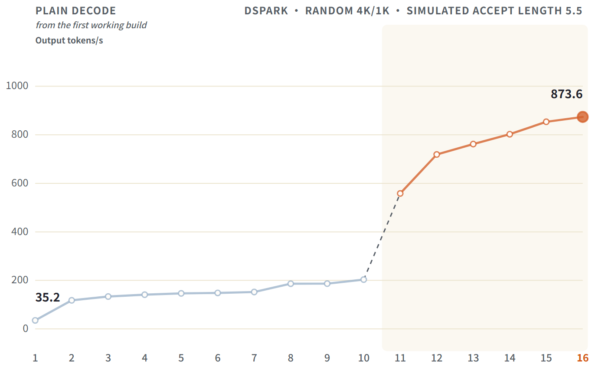
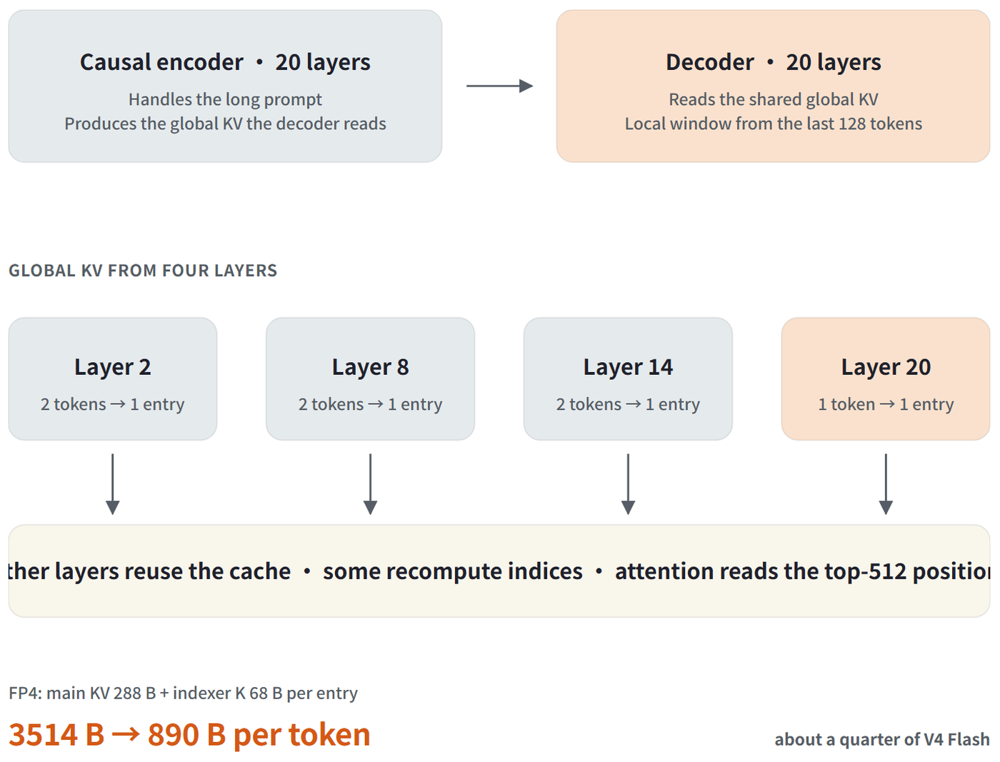
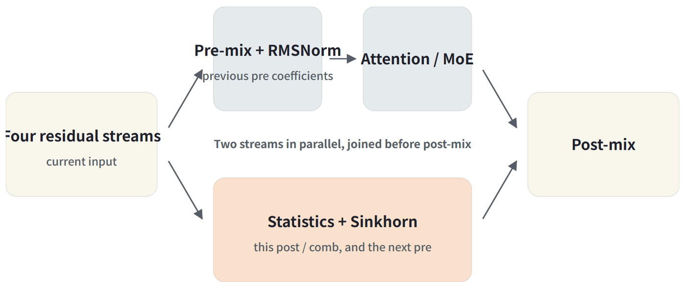
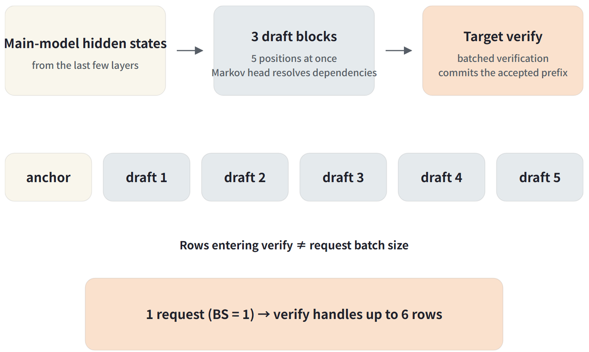

SGLang团队和DeepSeek一起完成了DeepSeek-V4.1 Flash的day-0支持与kernel优化。在4张GB300上、BS=1的纯解码场景里，从第一个能跑通的构建35 tokens/s起步，一路调到873.63 tokens/s。
这篇文章记录了整个过程：架构层面KV cache是怎么压下来的、纯解码阶段做了哪些算子级优化，以及打开投机解码DSpark之后如何把verify、MoE和小批量投影逐个吃透。
整条优化路径可以按16轮看：第1轮是第一个能跑通的构建（35.2 tokens/s），第2轮换上MXFP8 GEMM到117.8，第3轮把RoPE与FP4融合到133.5，第4轮mHC按输入行分块到141.1，第5轮归约与Sinkhorn融合到146.5，第6轮跨层共享scratch到148.4，第7轮C2 pooling融合到152.1，第8轮mHC统计量重叠到186.4，第9轮把快速路径默认打开到186.6，第10轮GEMV / norm / Engram gate到203.3。
第11轮打开DSpark直接跳到558.2；随后verify / MoE融合到718.8，小块投影与mHC到761.7，indexer后处理与投影融合到802.4，C2 verify压缩融合到853.5，最后把MoE从EP4换成TP4加padding到873.6。第1到10轮是纯解码的累计测量；第11到16轮使用同样的随机4k/1k输入、模拟接受长度固定5.5，取多次运行中位数。

V4.1 Flash的主干比V4 Flash更大，但每个输入token激活的参数更少，KV cache也小得多。对服务来说关键的是下面这几行。
因果编码器-解码器结构砍掉了prefill计算：20个解码层从编码器的最终输出取全局KV，所以长提示主要由前20层处理；解码器仍然需要局部窗口，它通过重放最后128个token来重建，这让主干的prefill工作量大约减半。但生成阶段是另一回事：每个生成的token仍然要走完所有40层。

KV cache的压缩来自共享、池化与FP4存储三件事。40层里只有4层（第2、8、14、20层）产生全局KV，其余层读取这些缓存，少数层会重算自己的索引。前三个缓存每两个token池化成一个条目，只有最后一个保持每个token一个条目；条目本身用FP4存储，主KV占288字节、indexer K占68字节。折算到每个原始token上，大约只有V4 Flash的四分之一。由于局部窗口总能靠重放重建，需要持久化的状态更少，DeepSeek给出的SSD缓存需求大约降到此前的八分之一。需要提醒的是，890字节是逻辑大小，SGLang里有些路径仍在使用FlashMLA兼容的缓存布局，实际分配的内存并不相同。
架构里还有两个组件贯穿了后面的kernel工作：CSA2用分层候选过滤收窄indexer的搜索范围，最后只有top-512的全局位置参与注意力；Engram通过n-gram查找引入一种条件记忆。它们在模型里各司其职，也各自带来了新的索引、归一化与融合工作。
| V4 Flash | V4.1 Flash | |
|---|---|---|
| 主干 | 284B | 552B，另有196B Engram记忆参数 |
| 每token激活 | 约13B | 输入约8B、输出约16B |
| 结构 | 43个解码层 | 20层因果编码器 + 20层解码器 |
| 全局注意力 | CSA / HCA | CSA2，KV与索引跨层共享 |
| 每token全局KV | 3514字节 | 890字节 |
先看纯解码是怎么从第一个可用构建的35 tokens/s走到203 tokens/s的。这一节的数字都是原始测量值。

FP8 GEMM：35到118。部分稠密权重随模型以FP8发布，但它们的量化块与scale布局和后端期望的不一致，这些GEMM一开始走了更慢的回退路径。现在在加载权重时一次性重排scale布局，它们就能直接进入Blackwell的MXFP8 GEMM。仅这一项就把BS=1从35.2提到117.8 tokens/s。结论是：接入新模型时，先确认一个GEMM真正派发到了哪个kernel，通常比调tile更有价值。
小算子融合与GEMV。逐token解码会跑一长串很短的kernel；RoPE、FP4量化、压缩器池化、RMSNorm和缓存写入彼此直接衔接，把相邻算子融合起来，每次都能省下一次kernel启动和一趟内存往返。具体收益是：RoPE加FP4（旋转、量化、反量化合进一个kernel）从117.8到133.5；C2压缩器（相邻token的归一化、池化与状态写入融合）从148.4到152.1；WO-A、norm与Engram gate（单行投影用GEMV，小规模的norm与gate用融合kernel）从186.6到203.3。
此外，他们把每步的请求索引与scratch缓冲从「每层各自重建」改成跨层共享，省掉大量重复的转换与初始化，把BS=1从146.5提到148.4 tokens/s。等这些快速路径验证通过后，就直接默认开启。
mHC：归约融合与重叠。mHC维护四条残差流而不是一条，对每个注意力与MoE子层都要为它们计算混合系数、再用Sinkhorn归一化。这些单独看都不贵，但它们要在每层的注意力和MoE里各跑一次，小批量下就会累加。先按输入行数选择tile尺寸，再把统计量归约与Sinkhorn融合，BS=1依次从133.5到141.1、再到146.5 tokens/s。
更大的收益来自V4.1单遍mHC的定义方式：pre-mix使用上一个子层产出的系数，因此当前的注意力或MoE可以与本子层的统计量计算并行。团队把两者放在不同stream上跑，在post-mix处汇合。再配合压缩器与indexer的融合和重叠，BS=1从约152提到186 tokens/s。小批量下，融合后的pre-mix与RMSNorm会先完成，然后统计量才开始，这减少了短kernel之间的争用。
DSpark随官方checkpoint一起发布，包含三个轻量草稿块：它们从主模型最后几层的隐状态出发，一次为多个位置产出logits，用Markov头解决草稿token之间的依赖，然后把整块交给目标模型做批量验证。他们把块大小固定为5，并用5.5的目标接受长度模拟接受行为；算上锚点，目标验证对单个请求最多要处理6行，而纯解码每个请求只处理1行，所以原来为M=1设计的快速路径需要为这种小批量重做。

第一组优化落在verify与MoE上：把mHC的重叠接进verify与草稿、让WO-A投影直接写进下一阶段需要的布局；候选掩码把有效长度检查与候选处理融合，减少对大缓冲区的扫描。MoE侧，路由器现在直接输出专家需要的布局，输入量化与路由重叠，专家加权归约、共享专家相加和all-reduce合成一步，减少中间写回。
第二组是小批量投影与归一化：WO-A用split-K让更多线程块并行工作，mHC把四条残差流的混合与RMSNorm融合；草稿的多个KV投影改为复用MXFP8权重与scale，而不是旧的FP8路径。
第三组融合了更多indexer后处理与投影：top-k之后的分数检查、非法位置过滤与KV页地址翻译合成一步，选中的候选块直接展开成token掩码；Q的RoPE合并进注意力缓冲写入，WO-A的split-K归约自己完成后续MXFP8量化，省掉一个中间张量。
第四组针对第2、8、14层（从0开始编号）的verify期压缩：这三层原本要跑一串小算子去找上一个token、处理掩码、再池化并写缓存。verify的位置是连续的，所以一个请求内可以直接读上一行，只有第一行需要环形缓冲。他们把成对池化、RMSNorm、RoPE、量化与主KV写入融合成单个kernel，然后把这份融合写入复用到index-K。
最后，MoE从EP4换成TP4加padding：按TP4切分后，专家中间维每张卡576，加载时padding到640以适配kernel。每张卡计算同一批专家的不同切片，因此专家负载不均时等待更少。在其余优化全部到位的情况下做同轮对比，EP4是854.64 tokens/s、TP4是873.63 tokens/s，提升2.22%；从trace上看，各rank到达finalize的中位差距从11.14微秒降到3.40微秒。
| 配置 | BS=1输出速度（tokens/s） | 实测接受长度 |
|---|---|---|
| DSpark，优化前 | 558.24 | 5.505 |
| + verify / MoE融合与重叠 | 718.75 | 5.505 |
| + 小块投影 / mHC融合 | 761.71 | 5.505 |
| + indexer后处理 / Q RoPE / WO-A量化 | 802.38 | 5.505 |
| + C2 verify压缩融合 | 853.49 | 5.520 |
| 全部优化 + MoE换TP4 + padding | 873.63 | 5.505 |
这一节复现的是图中DSpark的第11到16轮：4096个随机输入token、固定1024个输出token，接受长度用模拟方式瞄准5.5。服务器配置控制接受长度，所有版本使用同一份输入。
使用BBuf/sglang@835c3909的代码与revision dba1be0a的官方checkpoint，硬件是4张GB300；环境为PyTorch 2.13.0+cu130、FlashInfer 0.6.18、Triton 3.7.1、sglang-kernel 0.4.6.post1、sgl-deep-gemm 0.1.7与CUTLASS DSL 4.6.2。
下面是873.63 tokens/s背后的TP4服务命令，在该SGLang checkout的根目录下运行。--tp 4与 --ep-size 1意味着注意力与MoE都用TP4，这个版本在加载权重时施加padding。
export MODEL_PATH=/path/to/DeepSeek-V4.1-Flash
export SGLANG_RAGGED_VERIFY_MODE=static
export SGLANG_SIMULATE_ACC_LEN=5.5
export SGLANG_SIMULATE_ACC_METHOD=match-expected
CUDA_VISIBLE_DEVICES=0,1,2,3 PYTHONPATH="$PWD/python" MAX_JOBS=16 \
python -m sglang.launch_server \
--model-path "$MODEL_PATH" \
--served-model-name deepseek-ai/DeepSeek-V4.1-Flash \
--tp 4 --ep-size 1 --trust-remote-code \
--moe-a2a-backend none --moe-runner-backend flashinfer_mxfp4 \
--mem-fraction-static 0.80 --max-total-tokens 33554432 \
--chunked-prefill-size 4096 \
--cuda-graph-bs-decode 1 2 4 8 16 32 64 \
--max-running-requests 128 \
--speculative-algorithm DSPARK --speculative-dspark-block-size 5 \
--skip-server-warmup --reasoning-parser deepseek-v41 \
--random-seed 42 --decode-log-interval 10 \
--host 127.0.0.1 --port 30021要复现EP4的对比，把 --ep-size 1改成 --ep-size 4，其余保持不变。完整的TP4启动脚本见launch-tp4.sh。
输入用固定随机种子42生成：从模型词表中排除特殊token，均匀抽取4096个token id，直接输入、不走chat模板，所有配置复用同一份。
在第二个终端里运行下面的基准脚本。
ASSET_URL=https://raw.githubusercontent.com/BBuf/how-to-optim-algorithm-in-cuda/master/large-language-model/sglang/assets/deepseek-v41-kernel-journey/random-dspark
curl -fL "$ASSET_URL/prompt.json" -o prompt.json
curl -fL "$ASSET_URL/benchmark.py" -o benchmark.py
python -m pip install requests
python benchmark.py bench --prompt prompt.json --max-tokens 1024 --out result --repeat 6脚本使用temperature=0与ignore_eos=True，并在每次运行后校验输入为4096 token、输出为1024 token。输入走 /generate；脚本在启动后调用 /freeze_gc，每次运行前清空缓存，并丢弃一次预热。每次服务启动测6次；小块投影、indexer后处理与投影融合、C2 verify和TP4这几组配置各自独立启动了两次，取12次运行的中位数。本轮的EP4 / TP4对比按TP、EP、TP、EP交替启动，保留全部测量，测吞吐时关闭profiler。
match-expected每轮接受5或6个token，所以期望接受长度是5.5；有限轮数与最后一步的截断会让实测值略有偏差，表格保留实际值。接受是模拟出来的，因此生成文本不用于判断回答质量，模拟模式也会禁用图内的接受路径。吞吐按首个流式事件之后新增的token数除以首末事件之间的时间计算，不含完整prefill；接受长度统计目标模型产出的token，所以块大小为5时上限是6。
下表把DSpark关闭与开启并排放在一起，再加上MoE的TP4 + padding配置。所有条目使用同一份代码、同一份随机输入、同一输出长度与同一种计时方式，注意力全程TP4；表头的EP4 / TP4指MoE的配置。DSpark关闭时为223.50 tokens/s，开启后853.49，换成TP4 + padding后873.63。
相关链接包括：LMSYS博客的day-0支持文章（涵盖推理与RL训练）、SGLang的DeepSeek-V4.1部署指南（启动配置、硬件支持与调优说明）、SGLang DeepSeek-V4.1代码（dsv4.1分支）、Miles的DeepSeek-V4.1 Flash训练指南、Miles GitHub仓库，以及DeepSeek-V4.1技术报告；kernel实现可参考C2 verify压缩、indexer后处理、Q RoPE / store与WO-A / MXFP8的具体代码。
致谢部分感谢DeepSeek团队开源DeepSeek-V4.1，也感谢SGLang与Miles团队以及社区中参与模型支持、kernel、测试与评审的所有人；其中部分kernel使用KDA 0.5框架开发，作者也感谢Humanize与Kernel Design Agents提供的工具与工作流。
参考：https://www.sglang.io/blog/deepseek-v4.1-flash-kernel-optimization